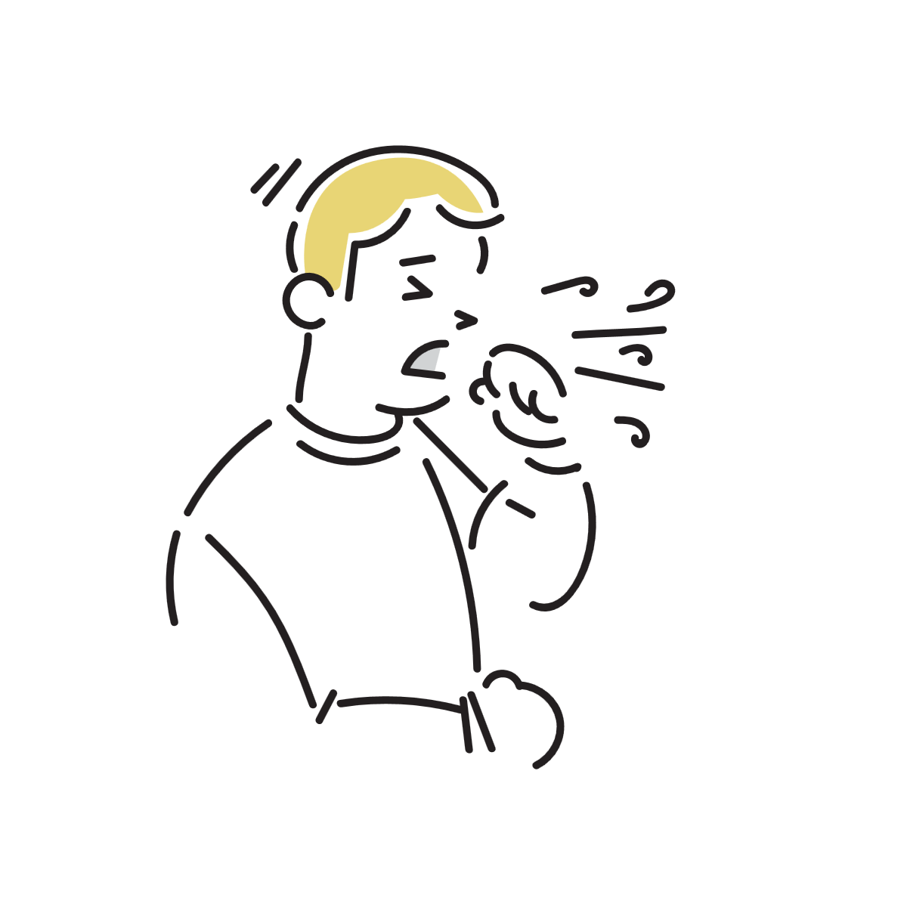
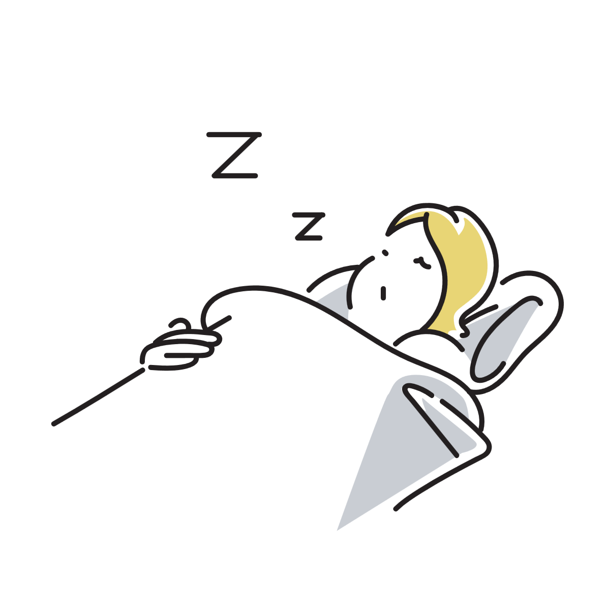
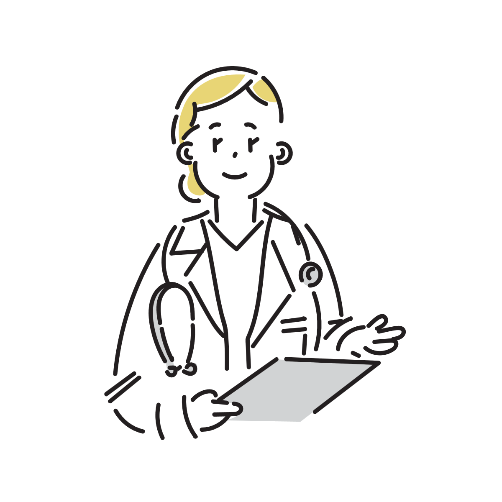

寝ると咳が止まるのはなぜ？
咳というと、「夜になると悪化する」という話を聞くことがあります。
しかし実際には、日中は咳が出やすいのに、横になったり眠ったりすると逆に落ち着く人もいます。
「寝ると楽になる」「起きて動き始めるとまた咳が出る」と感じる人も少なくありません。
これは気のせいではなく、呼吸の状態や刺激の受け方、意識の変化などが関係していると考えられています。

咳は「刺激への反応」
咳は、気道に入った異物や刺激を外へ出そうとする防御反応です。
そのため、空気の乾燥、ホコリ、会話、冷気、のどの違和感など、さまざまな刺激で起こります。
日中は活動量が多く、呼吸も増えるため、のどや気道への刺激が自然と増えやすくなります。
一方で、横になって安静になると、刺激そのものが減り、咳が落ち着くことがあります。
「起きていること」自体が咳を増やすこともある
咳は単純な反射だけではなく、意識や緊張の影響も受けます。
人は起きている間、のどの違和感や呼吸音に注意を向けやすく、それがさらに咳反射を誘発することがあります。
特に、「また咳が出そう」と意識すると、実際にのど周辺の緊張が高まり、咳が出やすくなることがあります。
逆に、眠気が強くなると意識が外部刺激へ向きにくくなり、咳反射が弱まる場合があります。
会話や呼吸量の変化も関係する
日中は話したり動いたりすることで呼吸量が増えます。
呼吸回数や空気の出入りが増えると、のどの乾燥や摩擦も増えやすくなります。
横になって静かにしていると、こうした刺激が減るため、咳が落ち着くことがあります。
眠ると体は「省エネモード」に近づく
入眠時には、自律神経や呼吸の状態も少し変化します。
体全体が休息方向へ切り替わることで、刺激への反応が弱まり、咳が出にくくなることがあります。
これは「咳の原因が治った」というより、一時的に反応が落ち着いている状態に近いイメージです。
そのため、朝起きて活動を始めると、再び咳が戻ることもあります。

「横になると悪化する咳」との違い
咳には、「横になると楽になるタイプ」だけでなく、「横になると悪化するタイプ」もあります。
例えば、鼻水がのどへ流れやすい場合や、逆流した胃酸が刺激になる場合は、横になることで咳が増えることがあります。
一方で、今回のように「安静にすると落ち着く」ケースでは、活動による刺激や意識の影響が関係している可能性があります。
つまり、「寝ると止まる」という現象自体は、それほど不自然なものではありません。
「治ったわけではない」ことも多い
眠ると咳が止まると、「気のせいだったのかも」と感じることがあります。
しかし実際には、刺激や反応性が一時的に下がっているだけで、原因そのものは残っていることも少なくありません。
そのため、翌日また活動を始めると、同じように咳が出ることがあります。
特に、風邪の回復期や軽い気道炎症では、このような波が起こることがあります。
注意が必要なケース
一時的な咳は比較的よくある反応ですが、長期間続く咳には別の原因が含まれることがあります。
特に、「息苦しさがある」「ゼーゼーする」「血が混じる」「数週間以上続く」といった場合は注意が必要です。
また、「寝ると止まるけれど日中は強く続く」という場合でも、症状が長引く場合は医療機関への相談が役立つことがあります。

咳を落ち着かせやすくするには
のどの乾燥を避けることは比較的重要です。
水分補給や加湿によって刺激が減ると、咳が和らぐことがあります。
また、長時間の会話や冷たい空気を避けることで、気道への負担が軽くなる場合もあります。
「眠ると止まる」というタイプでは、体を休めることで改善しやすいケースもあります。
参考情報と注意点
咳にはさまざまな原因があります。強い症状や長引く症状がある場合は医療機関への相談も検討してください。
関連アイテム
 | 価格:6980円 |